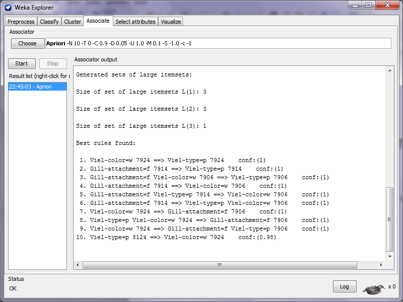

The Classic Mushroom Dataset
1. Can you generate summary statistics that help describe the data?
It is pretty easy to generate some basic counts of the different variables in both Knime and weka as seen below, these can give me a rough idea of the variations of each attribute. One nice feature about weka is that I can visualize them all based on the class label (or any other column). This is useful because I can visually see what attributes might be good for classifying. For example, a gill color of black is always poisonous in this dataset. See in figure 1 below the 1728 bar. See figure 2 for all graphs.
Figure 1. Gill color with blue as posinous. Red as edible.

Figure 2. All columns in mushroom data set colored according to class label. Blue is posinous. Red is edible.
2. Can the edible and poisonous data objects be distilled into groups?
It is kinda hard to visualize clusters for high dimensional data but I managed to whip something up in knime. By taking all the columns and converting them to binary values I can then generate clusters based on the distance. Ideally this would be done using jaccard as the similarity metric but both knime and weka only implement euclidean and manhattan. Below is an image of my knime setup for k-means.
Figure 3. Knime setup for K-means clustering
I only tested with generating 2,3,4, and 5 clusters. The best of these seemed to be the 2 cluster model. It puts 3100 of the poisonous in one and the rest are mixed into cluster 2. By looking at the values of the other attributes you can learn the relative percent of the other attributes in the clusters to maybe identify patterns. Can see some of the clustering in cluster1.png and cluster2.png
cluster 1 cluster 2{kind=link}
{kind=link}
3. Can a classification model be created that can predict whether a mushroom is edible or poisonous?
By just feeding the data into a decision tree learner in Knime we can create a model that can hopefully find the best way of guessing whether a mushroom is poisonous or edible. I included the image (tree.png) separately because it is a wide tree in Knime. The tree shows me that odor is a very accurate way of determining classes for the mushrooms. It is easy to see from the weka graphs (although I missed it earlier).

4. Do any anomalies exist in the dataset?
Maybe, I am having a bit of trouble finding a way for the toolkit to help with this. My current idea is since it is hard to get good statistics on nominal values that looking at the decision trees deepest impure nodes or ones with small impurities might tell you which entries are anomalies. Although the problem with this is it does not take into account all the attributes. The impurities may not be anomalies when compared to other records with all their dimensions. Example below, mushrooms with an odor of none are 96.6% edible are the 3.4% poisonous ones anomalies or not. It is always hard to tell.
5. Can any association rules be generated from this dataset? Yes, but it can be a bit of a challenge to find useful/interesting rules. For instance this is the top ten rules it you do not change the setting for a priori in weka.
These rules have nothing to do with poisonous and edible which are the most interesting and meaningful to us because it would be nice to have a simple rule to know which mushrooms not to eat. Luckily for me weka has a true/false field for generating class label rules. By turning this on I get much more interesting rules generated. I saved the results as classrules.txt. These are much better because you could pick a few to remember and they might one day save you life...